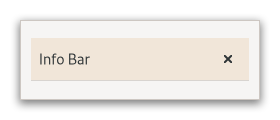

Gtk.InfoBar¶
Example¶
- Subclasses
None
Methods¶
- Inherited
Gtk.Widget (180), GObject.Object (37), Gtk.Accessible (15), Gtk.Buildable (1)
- Structs
class |
|
|
|
|
|
|
|
|
|
|
|
|
|
|
|
|
|
|
|
|
|
|
|
|
Virtual Methods¶
Properties¶
- Inherited
Name |
Type |
Flags |
Short Description |
|---|---|---|---|
r/w/c/en |
|||
r/w/en |
|||
r/w/c/en |
Signals¶
- Inherited
Name |
Short Description |
|---|---|
Gets emitted when the user uses a keybinding to dismiss the info bar. |
|
Emitted when an action widget is clicked. |
Fields¶
- Inherited
Class Details¶
- class Gtk.InfoBar(**kwargs)¶
- Bases
- Abstract
No
GtkInfoBarcan be show messages to the user without a dialog.An example
Gtk.InfoBarIt is often temporarily shown at the top or bottom of a document. In contrast to [class`Gtk`.Dialog], which has an action area at the bottom,
GtkInfoBarhas an action area at the side.The API of
GtkInfoBaris very similar toGtkDialog, allowing you to add buttons to the action area with [method`Gtk`.InfoBar.add_button] or [ctor`Gtk`.InfoBar.new_with_buttons]. The sensitivity of action widgets can be controlled with [method`Gtk`.InfoBar.set_response_sensitive].To add widgets to the main content area of a
GtkInfoBar, use [method`Gtk`.InfoBar.add_child].Similar to [class`Gtk`.MessageDialog], the contents of a
GtkInfoBarcan by classified as error message, warning, informational message, etc, by using [method`Gtk`.InfoBar.set_message_type]. GTK may use the message type to determine how the message is displayed.A simple example for using a
GtkInfoBar: ```cGtk.Widget*message_label;Gtk.Widget*widget;Gtk.Widget*grid;Gtk.InfoBar*bar;// set up info bar widget =
Gtk.InfoBar.new(); bar = GTK_INFO_BAR (widget); grid =Gtk.Grid.new();message_label =
Gtk.Label.new(“”);Gtk.InfoBar.add_child(bar, message_label);Gtk.InfoBar.add_button(bar, _(”_OK”),Gtk.ResponseType.OK); g_signal_connect (bar, “response”, G_CALLBACK (Gtk.Widget.hide),None);Gtk.Grid.attach(GTK_GRID (grid), widget, 0, 2, 1, 1);// …
// show an error message
Gtk.Label.set_text(GTK_LABEL (message_label), “An error occurred!”);Gtk.InfoBar.set_message_type(bar,Gtk.MessageType.ERROR);Gtk.Widget.show(bar); ```GtkInfoBarsupports a custom<action-widgets>element, which can contain multiple<action-widget>elements. The “response” attribute specifies a numeric response, and the content of the element is the id of widget (which should be a child of the dialogs action_area).GtkInfoBarsupports adding action widgets by specifying “action” as the “type” attribute of a<child>element. The widget will be added either to the action area. The response id has to be associated with the action widget using the<action-widgets>element.- CSS nodes
GtkInfoBarhas a single CSS node with name infobar. The node may get one of the style classes .info, .warning, .error or .question, depending on the message type. If the info bar shows a close button, that button will have the .close style class applied.Deprecated since version 4.10: There is no replacement in GTK for an “info bar” widget; you can use [class`Gtk`.Revealer] with a [class`Gtk`.Box] containing a [class`Gtk`.Label] and an optional [class`Gtk`.Button], according to your application’s design.
- classmethod new()[source]¶
- Returns
a new
GtkInfoBarobject- Return type
Creates a new
GtkInfoBarobject.Deprecated since version 4.10.
- add_action_widget(child, response_id)[source]¶
- Parameters
child (
Gtk.Widget) – an activatable widgetresponse_id (
int) – response ID for child
Add an activatable widget to the action area of a
GtkInfoBar.This also connects a signal handler that will emit the [signal`Gtk`.InfoBar::response] signal on the message area when the widget is activated. The widget is appended to the end of the message areas action area.
Deprecated since version 4.10.
- add_button(button_text, response_id)[source]¶
- Parameters
- Returns
the
GtkButtonwidget that was added- Return type
Adds a button with the given text.
Clicking the button will emit the [signal`Gtk`.InfoBar::response] signal with the given response_id. The button is appended to the end of the info bar’s action area. The button widget is returned, but usually you don’t need it.
Deprecated since version 4.10.
- add_child(widget)[source]¶
- Parameters
widget (
Gtk.Widget) – the child to be added
Adds a widget to the content area of the info bar.
Deprecated since version 4.10.
- get_message_type()[source]¶
- Returns
the message type of the message area.
- Return type
Returns the message type of the message area.
Deprecated since version 4.10.
- get_revealed()[source]¶
- Returns
the current value of the [property`Gtk`.InfoBar:revealed] property
- Return type
Returns whether the info bar is currently revealed.
Deprecated since version 4.10.
- get_show_close_button()[source]¶
-
Returns whether the widget will display a standard close button.
Deprecated since version 4.10.
- remove_action_widget(widget)[source]¶
- Parameters
widget (
Gtk.Widget) – an action widget to remove
Removes a widget from the action area of self.
The widget must have been put there by a call to [method`Gtk`.InfoBar.add_action_widget] or [method`Gtk`.InfoBar.add_button].
Deprecated since version 4.10.
- remove_child(widget)[source]¶
- Parameters
widget (
Gtk.Widget) – a child that has been added to the content area
Removes a widget from the content area of the info bar.
Deprecated since version 4.10.
- response(response_id)[source]¶
- Parameters
response_id (
int) – a response ID
Emits the “response” signal with the given response_id.
Deprecated since version 4.10.
- set_default_response(response_id)[source]¶
- Parameters
response_id (
int) – a response ID
Sets the last widget in the info bar’s action area with the given response_id as the default widget for the dialog.
Pressing “Enter” normally activates the default widget.
Note that this function currently requires self to be added to a widget hierarchy.
Deprecated since version 4.10.
- set_message_type(message_type)[source]¶
- Parameters
message_type (
Gtk.MessageType) – aGtkMessageType
Sets the message type of the message area.
GTK uses this type to determine how the message is displayed.
Deprecated since version 4.10.
- set_response_sensitive(response_id, setting)[source]¶
-
Sets the sensitivity of action widgets for response_id.
Calls
gtk_widget_set_sensitive (widget, setting)for each widget in the info bars’s action area with the given response_id. A convenient way to sensitize/desensitize buttons.Deprecated since version 4.10.
- set_revealed(revealed)[source]¶
- Parameters
revealed (
bool) – The new value of the property
Sets whether the
GtkInfoBaris revealed.Changing this will make self reveal or conceal itself via a sliding transition.
Note: this does not show or hide self in the [property`Gtk`.Widget:visible] sense, so revealing has no effect if [property`Gtk`.Widget:visible] is
False.Deprecated since version 4.10.
- set_show_close_button(setting)[source]¶
-
If true, a standard close button is shown.
When clicked it emits the response
Gtk.ResponseType.CLOSE.Deprecated since version 4.10.
Signal Details¶
- Gtk.InfoBar.signals.close(info_bar)¶
- Signal Name
close- Flags
- Parameters
info_bar (
Gtk.InfoBar) – The object which received the signal
Gets emitted when the user uses a keybinding to dismiss the info bar.
The
::closesignal is a keybinding signal.The default binding for this signal is the Escape key.
- Gtk.InfoBar.signals.response(info_bar, response_id)¶
- Signal Name
response- Flags
- Parameters
info_bar (
Gtk.InfoBar) – The object which received the signalresponse_id (
int) – the response ID
Emitted when an action widget is clicked.
The signal is also emitted when the application programmer calls [method`Gtk`.InfoBar.response]. The response_id depends on which action widget was clicked.
Property Details¶
- Gtk.InfoBar.props.message_type¶
- Name
message-type- Type
- Default Value
- Flags
The type of the message.
The type may be used to determine the appearance of the info bar.
- Gtk.InfoBar.props.revealed¶
- Name
revealed- Type
- Default Value
- Flags
Whether the info bar shows its contents.